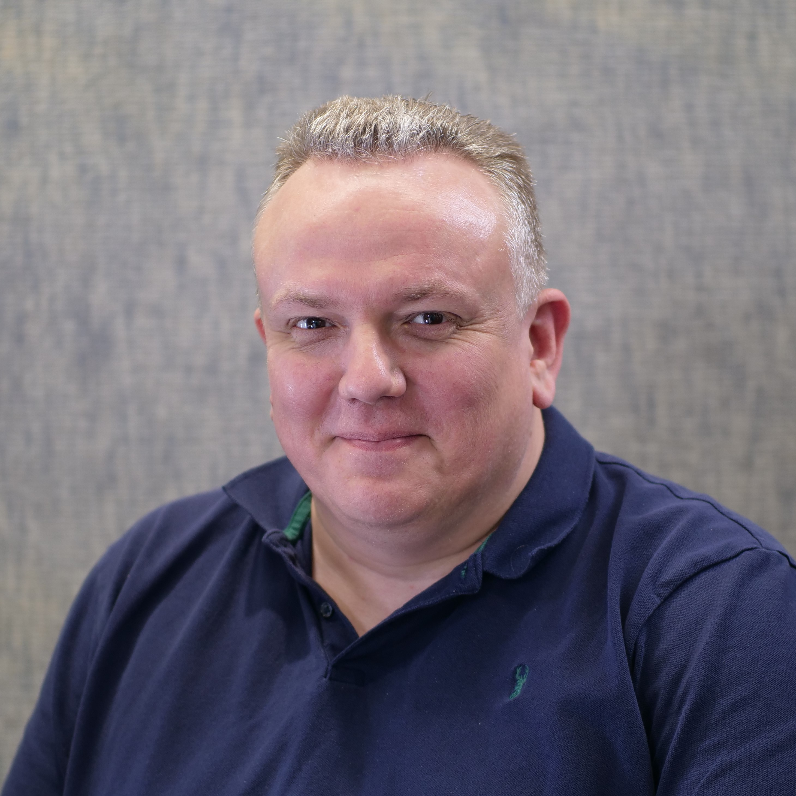

Mark Doney

Summary
"I am an accomplished unified communications and network engineer with a proven track record of success in deploying, migrating, and upgrading multiple unified communication systems, including Cisco Unified Communications Manager, Webex, Zoom, Unity Connection and UCCX. As a project engineer, leading multiple projects relating to implementing financial services systems. I excel at working collaboratively with cross-functional teams and vendors to resolve complex issues at early stages. I also have a strong background in troubleshooting and deploying LAN and WAN network implementations."
Technical Certifications
- Cisco CCNP Enterprise
- Cisco CCNP Collaboration
- Palo Alto PCNSA
Professional Experience
-
Senior Voice Engineer - Man Group Investments, London
(August 2021 - Present)
- Designing and evolving the future state of the voice and video infrastructure and automation, and processes within Man group.
- Getting involved in every stage of voice projects from design to implementation to support and management.
- Use a mixture of on-premises and cloud technologies to provide highly available and high-performance UC systems
- Troubleshooting problems and ensuring that the root-causes cause is understood & resolved.
- Maintaining a consistently high level of service delivery for incidents, requests and changes.
-
Unified Communications & Network Engineer - ICBC Standard Bank, London
(2018 - August 2021)
- Manage and enhance performance of the voice technology stack.
- Plan, install, and update new hardware and software
- Ensure storage and backup, along with user access control.
- Develop the voice technology stack by deploying latest technologies.
-
Unified Communications Engineer Dimension Data, Fleet, Hampshire
(2012 - 2018)
- Offered proactive third line unified communications, voice over IP, contact centre and video support for enterprise clients.
- Uncovered and fixed issues through understanding topology of the client. Actively involved in changes and upgrades to the customers environment.
- Delivered technical assistance for many systems encompassing Cisco Unified Communications, CUCM, Telepresence, CUBE, VCS, CME, UCCX, UCCE integration, Unity, CUE, CUPS, Gateways, H323, SIP, MGCP, Jabber, and third party integration to other applications.
- Troubleshooting problems and ensuring that the root-causes cause is understood & resolved.
- Maintaining a consistently high level of service delivery for incidents, requests and changes.
-
Unified Communications (VoIP) Support Engineer - 2e2, The Mansion House, Newbury
(2018 - August 2021)
- Coordinated with UC support team on delivering quality third line support for VoIP faults and issues.
- Uncovered and promptly resolved complex issues leveraging strong UC knowledge and root cause analysis.
- Fixed issues related to Cisco Unified Communications Manager, Unity, Unified Contact Centre Express, Arc (operator console), voice gateways including CUBE, SIP, H.323, MGCP, call recording solutions, and associated UC products.
-
Unified Communications Engineer - Lockheed Martin, Fareham
(2010 - 2011)
-
Unified Communications Engineer - Fabric Technologies Ltd, London
(2010)
-
Unified Communications Engineer - King’s Scholar’s House, London
(2009)
-
Senior Unified Communications Engineer - 2e2 Solutions Ltd, Berkshire
(2008 - 2009)
-
Senior Unified Communications Engineer - BTiNet, Oxfordshire
(2003 - 2009)
- Project Engineer - UC and network solutions
-
Technical Solutions Consultant - NTL, Wokingham
(2001 - 2003)
- Presales engineer - Voice and UC solutions
-
Network Engineer - Cable & Wireless, Bracknell
(1998 - 2001)